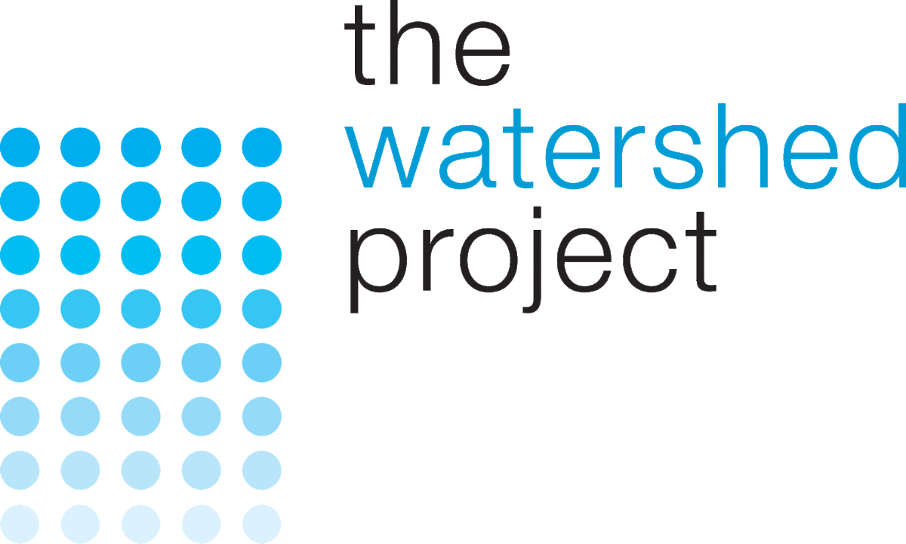
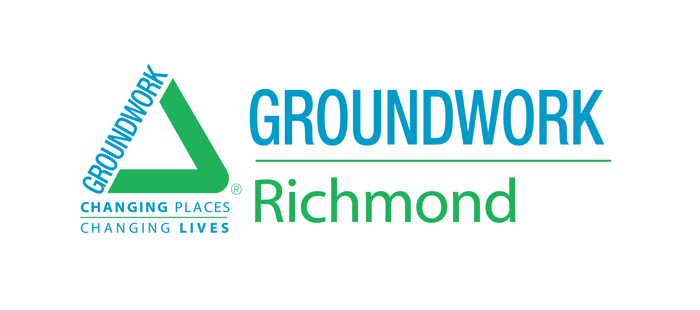
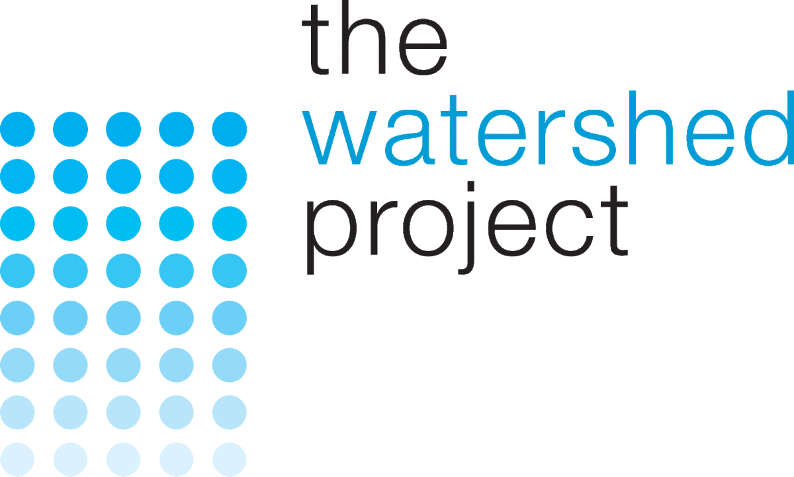
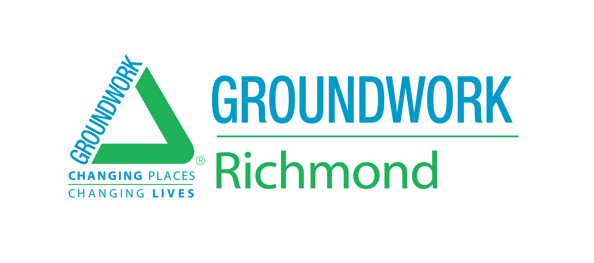
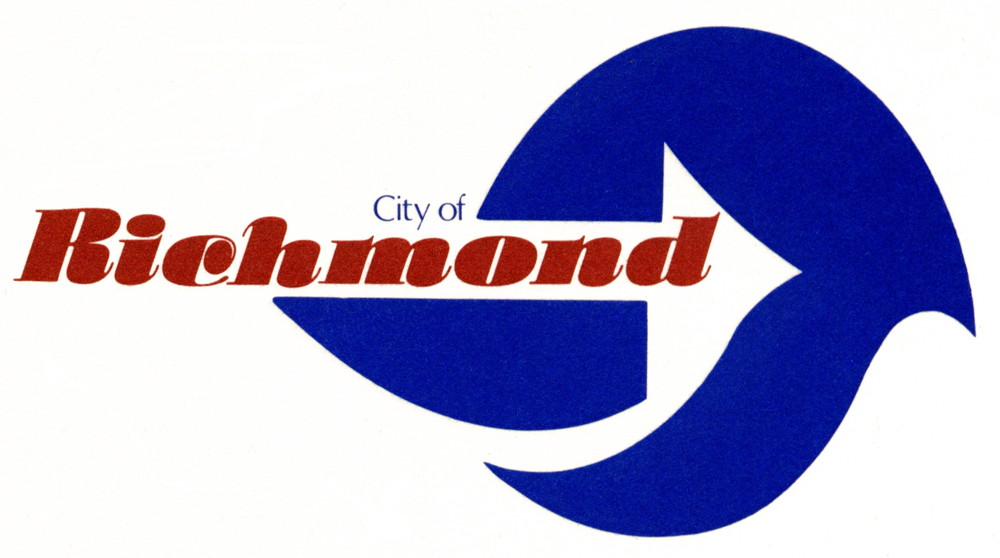
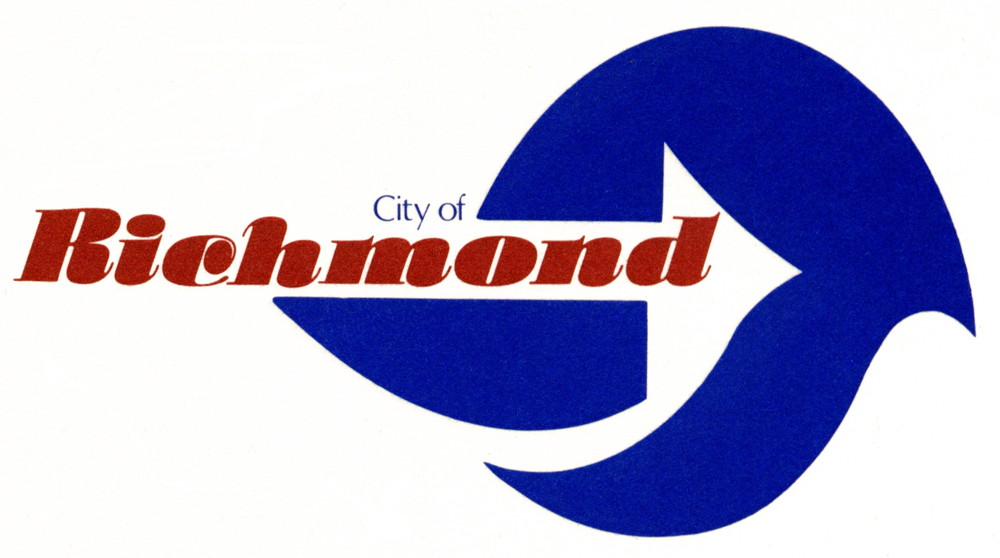
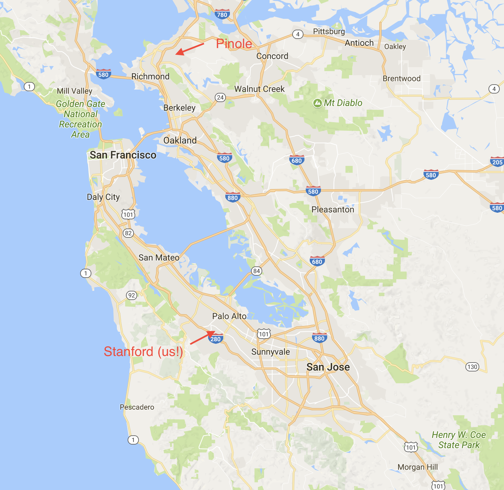

Who I've Worked With
 



 

Hey everyone! My name is Chris, and I'm running for Haas Service Liaison here in Cedro. If we haven't met yet, here's a brief intro:
Allow me to re-introduce myself, my name is Chris. I'm from a small city called Pinole, located here in the Bay Area. Some of my interests include playing basketball (or pretty much any other sport), listening to rap music, and having meaningful conversations about people.
I'd love to talk in person, so feel free to come talk to me anytime! You can find me at Room 206, and if I'm not there, just send me a text at (510) 724-1322.
For the past few months, I’ve been wondering what it’d be like to live at Stanford, a place filled with incredibly intelligent and capable students. It’s been almost two weeks since I moved here, and every day, I still find myself feeling immensely fortunate to be living here among all of you.
As Stanford students, we have the potential to shape the world. Because of this, I believe it is essential that we use our unique influence to change it for the better, and that we should be exemplars for others to follow.
As I’ve continued to learn more about the various issues affecting society and become more aware of the consequences they have on people, I’ve also continued to realize how important it is to help communities in need, and I’ve invested more effort and energy into considering and researching the impact of my actions and into finding ways to most effectively help those communities.
Although my particular interests are in the environment and in social justice, I understand that everyone has different areas of interest, and as the Cedro Haas Service Liaison, I would try to be accommodating and find opportunities so that each person can participate in service opportunities that they are passionate about.
My goal for Cedro is to make positive impact one of our core values, and to integrate service into our daily lives without requiring drastic change or sacrifice. I hope I will be able to find service opportunities that you enjoy, ones that you would be willing to pursue beyond our frosh year, and to create a community of service-oriented leaders effecting positive change.